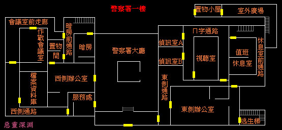
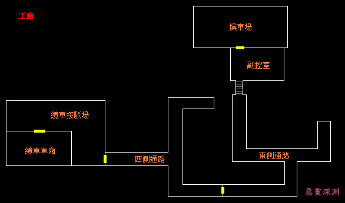

|
惡靈古堡２----- 表•Claire攻略流程
|
以下的攻略可以取得所有的File，標綠色的道具是重要道具，一定要取。
|
遊戲開始後閃過殭屍來到軍火用品店。 店裡的兩側櫃檯有手槍子彈，老闆受到殭屍襲擊後身上有十字弓槍。 出來後跑到底，救護車上有手槍子彈，由方才殭屍衝出來的門順路走，經過樓梯，越過箱子。 順路來到公車上，有一副手槍子彈，從公車前門下來，衝到警署大門。 進來後有兩條路，一條是往下，如果一路上都沒有拿任何道具，往下的路會出現殺人殭屍，身上有 Special Key可到警署裡換裝，兩條路只有其中一條有殭屍，出現殺人殭屍的話上面的路就很安全。 |

|
進入警署大廳，直接前往西側辦公室，發生劇情，取得藍色磁卡。 在大廳櫃檯電腦使用藍色磁卡，櫃檯上有手槍子彈、色帶。 往服務處，椅子上有署內回覽，用鐵絲打開牆角小桌的抽屜，可得急救噴霧，往西側通路，通路底端 有綠色藥草，經會議室前走廊、暗房前通路到暗房（如有拿到special key，可打開此處鐵櫃，取得S.A.A 自動手槍及一套服裝），桌上有作戰報告書２、色帶，暗房門前有綠色藥草２株，後上２樓。 |

|
將石像的迴廊的兩座石像推到特定位置讓他們面向中央石像，得到紅寶石。 進入 S.T.A.R.S. 辦公室，中央桌上有獨角獸徽章、Chris的日記，最左側看似長官的桌子連按五十次後 得到底片Ｄ，右側有個急救掛帶，可取得急救噴霧，櫃子裡有榴彈槍，左側第二個桌子上有手槍子彈 ，離開時突然收到傳真，調查傳真機取得給Chris的調查報告。 由原路回到大廳一樓，再女神石像前使用獨角獸徽章，得到黑桃鑰匙。 前往檔案資料庫，入門右手最裡側的書架上有巡邏報告書，裡面的櫃子有急救噴霧，將梯子推到櫃子 前，取得櫃子上方的曲柄。 上二樓到二樓大廳，在此遇見 Sherry，也和 Leon 碰面了，走廊旁的架上有火炎彈，用鐵絲打開小桌子 的抽屜，得到手槍子彈。 到圖書館，上樓梯跑到底，樓梯崩壞落下至小隔間，打開閃著紅燈的開關，把左邊兩個書架都向右移 一格，回去小隔間得到海蜥石。 經大廳二樓迴廊到接待室，在椅子上有打火機，桌上有秘書的日記Ａ、色帶。 回到大廳二樓迴廊，將中央梯子放下由此下去，前往一樓的作戰會議室，在裡側壁爐使用打火機，得 到紅寶石。桌上有作戰報告書１、手槍子彈。 回到二樓經二樓東側迴廊（途中會經過逃生梯的門，先將它打開，外面有綠色藥草。東側迴廊地上屍 體有手槍子彈）到停機坪，由樓梯下去，到一樓的室外廣場，到置物小屋，有活門旋柄、色帶、十字 弓槍。 回到停機坪，在鐵網裡面使用活門旋柄滅火，從東側迴廊回到美術室前迴廊。 到美術室裝上兩顆紅寶石在女神像上，得到青石，旁邊有方塊鑰匙。 從石像的迴廊下樓，到一樓的置物間，搜搜櫃子使用鐵絲可得塑膠炸藥、十字弓箭、底片Ａ。 到西側辦公室，一進去就可以看到綠色藥草，到隔起的辦公室，遇上Marvin殭屍化，右側桌上有信管 （與塑膠炸藥組合成塑膠炸彈），外側桌上有手槍子彈，離往大廳的門最近的桌上有給Leon的字條。 回到二樓美術室前迴廊，在變形無法打開的門前使用塑膠炸彈，然後進入署長辦公室，發生劇情，結 束後前往署長室迴廊，接著到署長個人收藏室，到裡側，打開裡側門旁的電燈開關，遇見 Sherry，發 生劇情。 劇情結束，可在桌上取得秘書的日記Ｂ，裡邊小桌上的箱子裡有急救噴霧。 順原路回到署長辦公室，桌上有紅心鑰匙，椅子上有署長的手札，調查牆上的畫開啟機關，如果手上 拿有海蜥石可以先裝上。 從大廳到一樓東側辦公室，外側桌上有色帶，裡側的保險箱密碼是2236（署內回覽裡有寫），裡面有 硫酸彈、警察署地圖，背後的辦公桌後有綠色藥草，逃生梯門前屍體有手槍子彈，外面有綠色藥草。 經休息室前通路下樓到地下室東側通路。 |

|
（可以不去）到電力供應室取得綠色藥草、地下室地圖，調整電力供應的機器，正確的調法是「上 . 上 . 下 . 上 . 下」（順序可換）。 |

|
（此時地下停車場不可通行）到下水道通路（有紅色藥草），由樓梯下去，進入下水處理場的右置物 間，出來後遇到 Sherry，發生劇情，角色切換成 Sherry。 Sherry來到下水處理場中央部，往左最多到中央通路可拿到榴彈，會傳給 Claire，進入排水控制室將裡 面的箱子推成一線，再按下開關，水上升後就可以踩箱子通過，櫃子上面有梅花鑰匙，靠門的牆上有 下水處理場地圖。 回到外牆通路，發生劇情，角色切換回 Claire，拾起地上的東西，順著原路回到警署地下一樓。 （可以不去）進入停屍間，在最裡側拿到紅色磁卡，再到武器庫（先前要有去電力供應室調整才行） ，裡面有十字弓箭、手槍子彈，還有衝鋒槍和腰包二選一（選走 的那一個�媄鶼N拿不到了，建議選腰 包）。 回警署一樓，打開值班休息室，可以拿到硫酸彈、喬治的日記。 經ㄇ字通路到視聽室，在火爐前面使用打火機，依12皇后、 13國王、 11傑克的順序打開，金色齒輪就 會掉下，去將齒輪拾起，小桌上有底片Ｂ。 出來後到偵訊室Ａ，拿起桌上的電線還有櫃子上的鷹石。 經由服務處到一樓西側通路，在窗旁使用電線，再來到暗房，將之前拿到的三卷底片沖洗。 |

|
帶著之前拿到的曲柄和金色齒輪從圖書室的樓梯來到大廳三樓，轉往機關室，在進門右手牆上使用曲 柄，由降下的樓梯上去，在齒輪處使用金色齒輪按下紅色按鈕，調查開啟的門取得青石２（兩塊青石 組合成虎石），找機會整理裝備，準備對付Ｇ幼體。 回到二樓署長的辦公室，再次遇見 Sherry，將三塊石（海蜥石、鷹石、虎石）全裝上，密門打開，門 內地板上取得給署長的信，然後搭乘電梯往警署地下一樓。 經隱藏通路到解剖室，發生劇情，署長死亡，附近有硫酸彈，得到後從牆角下去，到達鐵橋，遇上了 Ｇ幼體，勝利後回到署長辦公室與 Sherry會合。 |

|
帶 Sherry再次回到鐵橋，由另一端的梯子上去，順著路走，發生劇情，角色切換成Sherry，從倉庫前通 路往倉庫Ｂ（下層），調查附近牆下方的通氣口，爬行到垃圾收集室，在垃圾堆中有豺狼徽章，拾起 後掉落至垃圾處理場，角色切換回 Claire。 順著路到倉庫Ｂ（上層），在桌上有給下水道管理員的 Fax ，其他還有色帶、急救噴霧、手槍子彈。 從箱子取出活門旋柄，搭電梯下樓到 T 字通路，牆上有地圖，之後到對外通路、機關室。 發生劇情，門口有藍色藥草盆，使用活門旋柄讓鐵橋降下，到達對岸後再使用活門旋柄讓鐵橋升回去 ，附近有火炎彈、綠色藥草２株。 經垃圾搬運道前往垃圾處理場，門打開後遇上鱷魚，立刻往回跑到垃圾搬運道中高壓氣瓶的所在處（ 有亮燈指示），放下高壓氣瓶，待牠咬住後再瞄準，一發即可使牠斃命。 到垃圾處理場與 Sherry 會合（附近有色帶、豺狼徽章），從旁邊的樓梯上去，通過中央的鐵橋往左跑 到底取得鷲鷹徽章、下水道管理員日報表，在另一頭底部的通風口使用活門旋柄後通過。 回到東側下水道，到對外通路的流水前機關使用豺狼徽章、鷲鷹徽章，待水退去後，經吊橋到纜車接 駁場，打開右側的電源，進入纜車中。 |

|
出來到纜車接駁場，左側地板上有武器櫃鑰匙，可以不拿，西側通路上方死路底端有閃電保鑣，東側 通路右方死路底端有綠色藥草兩株。 副控室裡有急救噴霧、火炎彈、榴彈、色帶，在此整理裝備，等下要跟 G-2 搏鬥。 操車廠牆上有地圖，櫃子上有手槍子彈，直接進入運輸車最裡側，拿到工廠鑰匙、火炎彈，將鑰匙拿 到運輸車外平台上的關關使用，運輸車下降， Sherry身體異常，G-2 來襲， Claire 出運輸車，跟 G-2 戰 鬥，火炎彈算是理想的武器，勝利後回運輸車內。 |

|
帶著異常的 Sherry到達研究所地下四樓的警備室，警備室有榴彈、火炎彈、綠色藥草、色帶， Sherry 脫 隊。 獨自一人前往低溫實驗室，在裡側架子上取得保險絲外殼，在右側機器使用製成主保險絲，旁邊有急 救噴霧。 將主保險絲拿到動力傳導棒使用，恢復電力。 經Ｂ通路到宿舍，長椅上有成員登錄法，電腦前有研究設施保安手冊，調查電腦，會詢問玩家是打開 B.O.W.瓦斯，建議不要，打開後會對食人植物造成影響，請看敵人介紹。鐵櫃裡有十字弓箭。 （可以不去）在宿舍的通風口上有植物的藤蔓，可以用打火機燒掉或用火焰彈攻擊（燒掉後�媄鶼N不 會出現），從通風口爬到休息室，休息室鐵櫃裡有榴彈兩副，電腦前有色帶。 打開通往樓梯的門，小心食人植物，可用火炎彈攻擊，樓梯也有一隻，還有兩株綠色藥草。 |

|
由樓梯下來後到達地下五樓陽台，南側通路上有多隻利卡還有三株綠色藥草，可從監控室的電腦得到 研究所地圖，經西側通路進入研究實驗室第一扇門，鐵櫃如有武器櫃鑰匙開啟，裡面有榴彈２副，桌 上有急救噴霧，打開第二扇、第三扇門，在裡側桌上取得研究室磁卡。 （可以不去）用研究室磁卡打開電腦室，在電腦輸入GUEST，然後回到地下四樓的培養實驗室前登錄 指紋，這樣�媄鶼N可以進入拿取衝鋒槍。 在想離開西側通路時發生劇情，得到G疫苗DEVEIL生成法，回監控室時發生劇情。 照原路回地下四樓，前往活性處理室，打開電燈，裡面有榴彈、疫苗盒，最重要的是拿到 MO 片，將 疫苗盒放入活性處理機，打開附近牆上的開關，取得疫苗基體。 回到五樓的研究實驗室，在電腦前使用疫苗基體，作成疫苗。 在南側通路的配電板使用 MO 片，打開通往倉庫的門，到倉庫後離爆破只剩五分鐘，前去按下電梯的 按鈕，此時 G- 4出現，需要打他兩次，建議使用榴彈。勝利後趕快搭上電梯，下電梯後順著路跑（時 間仍在倒數），動畫出現， Claire 總算是脫困了。 |
惡靈深淵Biohazard Abyss http://98.to/coolbio